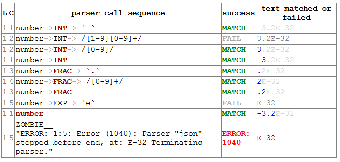

Overview of DHParser#
DHParser is a parser-generator and domain-specific-language (DSL) construction kit that is designed to make the process of designing, implementing and revising a DSL as simple as possible. It can be used in an adhoc-fashion for small projects and the grammar can either be specified in Python (similar to the approach of pyparsing) or, alternatively, in a slightly amended version of the Extended-Backus-Naur-Form (EBNF) directly within the Python-code. But DHParser can just as well be used for large projects where you set up a directory tree with the grammar, parser, test-runner each residing in a separate file und the test and example code in dedicated sub-directories.
DHParser uses packrat parsing with full left-recursion support which allows to build parsers for about any context-free grammar. Thus, when writing a grammar you do not need to worry about potential restrictions of the parser. DHParser provides a post-mortem debugger to analyze the parsing process and it offers facilities for unit-testing grammars as well as some (experimental) support for fail-tolerant parsing so that the parser does not stop at the first syntax error it encounters. Finally, it provides the necessary boilerplate code for language servers that adhere to the editor-independent the language server-protocol. This makes adding editor support for you own DSL easy - no matter which editor is your (or your user’s) favorite one.
Automatic Parser-Generation#
Generating a parser from a grammar#
Generating a parser does not requires more than writing your grammar in EBNF and compiling it with the “dhparser”-command into a readily usable Python-script!
Let’s try this with a parser for the Javascript-Object-Notation (JSON). To generate a json-Parser, just store the following EBNF-code which closely resembles the grammar on the JSON-Website in a file named “json.ebnf”:
@literalws = right
@drop = whitespace, strings
@hide = /_\w+/
json = ~ _element _EOF
_element = object | array | string | number | _bool | null
object = "{" member { "," §member } §"}"
member = string §":" _element
array = "[" [ _element { "," _element } ] §"]"
string = `"` §_CHARACTERS `"` ~
number = INT [ FRAC ] [ EXP ] ~
_bool = true | false
true = `true` ~
false = `false` ~
null = "null"
_CHARACTERS = { PLAIN | ESCAPE }
PLAIN = /[^"\\]+/
ESCAPE = /\\[\/bnrt\\]/ | UNICODE
UNICODE = "\u" HEX HEX
HEX = /[0-9a-fA-F][0-9a-fA-F]/
INT = [`-`] ( /[1-9][0-9]+/ | /[0-9]/ )
FRAC = `.` /[0-9]+/
EXP = (`E`|`e`) [`+`|`-`] /[0-9]+/
_EOF = !/./
(The three lines starting with an @-sign at the beginning of the
grammar-string are not standard EBNF-code, but DHParser-directives (see
ebnf) which help to streamline the syntax-tree that the parser
produces.)
Then, run the “dhparser”-script to generate a parser:
$ dhparser json.ebnf
This generates a script jsonParser.py that can be called with any
text-file or string to produce a syntax-tree:
$ echo '{ "one": 1, "two": 2 }' >test.json
$ python jsonParser.py --xml test.json
<json>
<object>
<member>
<string>
<Text__>"</Text__>
<PLAIN>one</PLAIN>
<Text__>"</Text__>
</string>
<number>
<INT>1</INT>
</number>
</member>
<member>
<string>
<Text__>"</Text__>
<PLAIN>two</PLAIN>
<Text__>"</Text__>
</string>
<number>
<INT>2</INT>
</number>
</member>
</object>
</json>
Mind that the generated script does not yield the json data in form of a nested tree of python dictionaries and arrays but only the syntax tree of the JSON-document. To derive the actual JSON-data from the syntax-tree of a JSON-document a few more processing steps are necessary (see further below).
The generated JSON-parser can, of course, also be imported and called
form a python-srcipt. The function in the generated parser module that
the this work is named compile_src (see
also Compiling the AST to data below.). It called with the source string
and returns a tuple of the result (possibly None) and a list of
error-objects (Error) which is empty if no
error occurred:
import JSONParser
source = '{"JSON": ["A", "JSON", "Text"]}'
result, errors = JSONParser.compile_src(source)
if errors:
for e in errors: print(e)
else:
print(result)
Creating parsers within a Python-script#
In case you just need a parser for some very simple DSL, you can directly add a string with the EBNF-grammar of that DSL to you python code and compile if into an executable parser much like you’d compile a regular expression. Let’s do this for a JSON-parser:
import sys
from DHParser.dsl import create_parser
json_grammar = r"""
@literalws = right
@drop = whitespace, strings
@hide = /_\w+/
json = ~ _element _EOF
_element = object | array | string | number | _bool | null
object = "{" member { "," §member } §"}"
member = string §":" _element
array = "[" [ _element { "," _element } ] §"]"
string = `"` §_CHARACTERS `"` ~
number = INT [ FRAC ] [ EXP ] ~
_bool = true | false
true = `true` ~
false = `false` ~
null = "null"
_CHARACTERS = { PLAIN | ESCAPE }
PLAIN = /[^"\\]+/
ESCAPE = /\\[\/bnrt\\]/ | UNICODE
UNICODE = "\u" HEX HEX
HEX = /[0-9a-fA-F][0-9a-fA-F]/
INT = [`-`] ( /[1-9][0-9]+/ | /[0-9]/ )
FRAC = `.` /[0-9]+/
EXP = (`E`|`e`) [`+`|`-`] /[0-9]+/
_EOF = !/./
"""
json_parser = create_parser(json_grammar, 'JSON')
if __name__ == '__main__':
if len(sys.argv) > 1:
with open(sys.argv[1], 'r', encoding='utf-8') as f:
json_text = f.read()
else:
# just a test
json_text = '{ "one": 1, "two": 2 }'
syntax_tree = json_parser(json_text)
print(syntax_tree.serialize(how='XML'))
Instead of specifying the grammar with EBNF and then generating a parser
form the grammar, parsers can also be directly written with Python-code.
This is best be done inside a derivative class of
Grammar. Doing so avoids namespace pollution and
invokes a bit of Grammar-class magic that assigns the field names to the
Parser-objects. (Otherwise the name()-method
would have to be called, explicitly.):
import sys, re
from DHParser.parse import Grammar, Forward, Whitespace, Drop, NegativeLookahead, \
ZeroOrMore, RegExp, Option, TKN, DTKN, Text
class JSON_Grammar(Grammar):
disposable__ = re.compile(r'_\w+') # keep syntax-tree free from matching names
_element = Forward()
_dwsp = Drop(Whitespace(r'\s*'))
_EOF = NegativeLookahead(RegExp('.'))
EXP = Text("E") | Text("e") + Option(Text("+") | Text("-")) + RegExp(r'[0-9]+')
DOT = Text(".")
FRAC = DOT + RegExp(r'[0-9]+')
NEG = Text("-")
INT = Option(NEG) + RegExp(r'[1-9][0-9]+') | RegExp(r'[0-9]')
HEX = RegExp(r'[0-9a-fA-F][0-9a-fA-F]')
UNICODE = DTKN("\\u") + HEX + HEX
ESCAPE = RegExp('\\\\[/bnrt\\\\]') | UNICODE
PLAIN = RegExp('[^"\\\\]+')
_CHARACTERS = ZeroOrMore(PLAIN | ESCAPE)
null = TKN("null")
false = TKN("false")
true = TKN("true")
_bool = true | false
number = INT + Option(FRAC) + Option(EXP) + _dwsp
string = Text('"') + _CHARACTERS + Text('"') + _dwsp
array = DTKN("[") + Option(_element + ZeroOrMore(DTKN(",") + _element)) + DTKN("]")
member = string + DTKN(":") + _element
json_object = DTKN("{") + member + ZeroOrMore(DTKN(",") + member) + DTKN("}")
_element.set(json_object | array | string | number | _bool | null)
json = _dwsp + _element + _EOF
root__ = json # required, must point to the root-parser of the grammar!
json_parser = JSON_Grammar()
if __name__ == '__main__':
if len(sys.argv) > 1:
with open(sys.argv[1], 'r', encoding='utf-8') as f:
json_text = f.read()
else:
# just a test
json_text = '{ "one": 1, "two": 2 }'
syntax_tree = json_parser(json_text)
print(syntax_tree.serialize(how='indented'))
Note, that a root__-field must be added to the class definition that
points to the root-parser of the Grammar! (The disposable__-field is
optional and defines a pattern for names of parsers which are considered
mere “helper”-parsers that do not capture any essential unit of data by
themselves and therefore do not need to appear as node-names in the
syntax-tree.)
Usually, the best alternative is to specify the grammar in EBNF, compile it and then copy and paste the compiled grammar into your script. This is easier and neater than specifying the parser with Python-code. And it saves the added startup time that results from compiling the grammar within the Python-script.
Full scale DSLs#
Larger and more complex DSL-projects can easily be set up by calling the “dhparser”-script with a name of a project-directory that will then be created and filled with templates for the project-files:
$ dhparser JSON
$ cd JSON
$ dir
example.dsl JSON.ebnf JSONServer.py README.md tests_grammar tst_JSON_grammar.py
The first step is to replace the “.ebnf”-file that contains a simple demo-grammar with your own grammar. For the sake of the example we’ll write our json-Grammar into this file:
# EBNF-Directives
@literalws = right # eat insignificant whitespace to the right of literals
@whitespace = /\s*/ # regular expression for insignificant whitespace
@comment = /(?:\/\/.*)|(?:\/\*(?:.|\n)*?\*\/)/ # C++ style comments
@drop = whitespace, strings # silently drop bare strings and whitespace
@hide = /_\w+/ # regular expression to identify disposable symbols
#: compound elements
json = ~ _element _EOF
_element = object | array | string | number | _bool | null
object = "{" member { "," §member } §"}"
member = string §":" _element
array = "[" [ _element { "," _element } ] §"]"
#: simple elements
string = `"` §_CHARACTERS `"` ~
number = INT [ FRAC ] [ EXP ] ~
_bool = true | false
true = `true` ~
false = `false` ~
null = "null"
#: atomic expressions types
# string components
_CHARACTERS = { PLAIN | ESCAPE | UNICODE }
PLAIN = /[^"\\]+/
ESCAPE = /\\[\/bnrt\\"]/
UNICODE = "\u" HEX HEX
HEX = /[0-9a-fA-F][0-9a-fA-F]/
# number components
INT = [`-`] ( /[1-9][0-9]+/ | /[0-9]/ )
FRAC = `.` /[0-9]+/
EXP = (`E`|`e`) [`+`|`-`] /[0-9]+/
_EOF = !/./
The division of the grammar into several sections is purely
conventional. If a comment-line starts with #: this is a hint to the
test script to generate a separate unit-test-template with the
section-name that follows in the same line.
The “tst_XXX_grammar.py”-script is the most important tool in any DSL-project. The script generates or updates the “XXXParser.py”-program if the grammar has changed and runs the unit tests in the “tests_grammar” subdirectory. After filling in the above grammar in the “json.ebnf”-file, a parser can be generated by running the test script:
$ python tst_JSON_grammar.py
If there were no errors, a new “jsonParser.py”-file appears in the directory (as well as a “jsonServer.py” and a “jsonApp.py”-script which will be explained later). Before we can try it, we need some test-data. Then we can run the script just like before:
$ rm example.dsl
$ echo '{ "one": 1, "two": 2 }' >example.json
$ python JSONParser.py --xml example.json
<json>
<object>
...
Clutter-free grammars#
DHParser tries to minimize unnecessary clutter in grammar definitions. To reach this goal DHParser follows a few, mostly intuitive, conventions:
The symbols on the left hand side of any definition (or “rule” or “production”) are considered significant by default.
Nodes generated by a parser associated to a symbol will carry the symbol’s name and are considered structurally relevant, i.e. they will be eliminated silently. All other nodes are considered as structurally irrelevant and may silently be removed from the syntax-tree to simplify its structure while preserving its content.
Symbols can, however, be marked as “disposable”, too.
Thus, you’ll never see an “_element”-node in a JSON-syntax-tree produced by the above grammar, but only object-, array-, string-, number-, true-, false- or null-nodes. (See Simplifying Syntax-Trees while Parsing.)
Insignificant whitespace is denoted with a the single character:
~.Comments defined by the
@comment-directive at the top of the grammar are allowed in any place where insignificant~-whitespace is allowed.Thus, you never need to worry about where to provide for comments in you grammar. Allowing comments wherever insignificant whitespace is allowed is as easy as it is intuitive. (See
comments_and_whitespace().)To keep the grammar clean, delimiters like “,” or “[”, “]” can catch adjacent whitespace (and comments), automatically.
Since delimiters are typically surrounded by insignificant whitespace, DHParser can be advised via the
@literalws-directive to catch insignificant whitespace to the right or left hand side of string literals, keeping the grammar clear of too many whitespace markers.In case you would like to grab a string without “eating” its adjacent whitespace, you can still use the “back-ticked” notation for string literals
`back-ticked string`.DHParser can be advised (via the
@drop-directive) to drop string-tokens completely from the syntax-tree and, likewise, insignificant whitespace or disposable symbols. This greatly reduces the verbosity of the concrete syntax tree.In case you would still to keep a particular string-token in the tree, you can still do so by assigning it to a non-disposable symbol, e.g.
opening_bracket = "("and using this symbol instead of the string literal in other expressions.Macros (marked with
$) can be used to avoid code-repetition within a grammar; the@include-directive allows to share code between code between different grammarsAh, and yes, of course, you do not need to end every single definition in the grammar with a semicolon “;” as demanded by that ISO-norm for EBNF :-)
Declarative AST-building#
DHParser does does not hide any stages of the tree generation process. Thus, you get full access to the (somewhat simplified if you choose) concrete syntax tree (CST) as well as to the (even more simplified and streamlined) abstract syntax tree (AST).
An internal mini-DSL for AST-transformation#
Abstract syntax tree generation is controlled in declarative style by simple lists of transformations applied to each node depending on its type. Remember our JSON-example from above? In the simplified concrete syntax tree string-objects still contained the quotation mark delimiting the string. Since these are not needed in the data you’d like to retrieve from a JSON-file, let’s drop them from the abstract syntax-tree:
JSON_AST_transformation_table = {
"string": [remove_brackets]
}
The “JSON_AST_transformation_table”-dictionary can be found in the generated
“JSONParser.py”-script. Simply add the rule “remove_bracket” from the
transform-module to the list of rules for those nodes where you wish
to remove any delimiters at the beginning or end:
$ python JSONParser.py --xml example.json
<json>
<object>
<member>
<string>
<PLAIN>one</PLAIN>
</string>
...
Alternatively, you could also have used the rule "string":
[remove_children(':Text')] in case you are sure that nodes with the tag-name
“:Text” can only occur in a string at the beginning and at the end as nodes
containing the quotation mark-delimiters of a string do according to our
specification of the JSON-grammar.
To give an impression of how AST-transformation-tables may look like, here is an excerpt from (a former version of) DHParser’s own transformation table to derive a lean AST from the concrete syntax-tree of an EBNF grammar:
EBNF_AST_transformation_table = {
# AST Transformations for EBNF-grammar
"syntax": [],
"directive": [flatten, remove_tokens('@', '=', ',')],
"definition": [flatten, remove_tokens('=')]
"expression": [replace_by_single_child, flatten,
remove_tokens('|')]
"sequence": [replace_by_single_child, flatten],
...
}
The transform-module contains a number of useful transformation-rules
that can be combined almost arbitrarily in order to reshape the concrete
syntax-tree and carve out the abstract syntax tree. However, if the grammar is
well-designed and if the concrete syntax tree has already been simplified with
the help of DHParser’s @hide-, @reduction- and
@drop-directives, only few transformations should remain necessary to
produce the desired abstract syntax-tree.
In specific application cases it is often desirable to model the
abstract syntax-tree as a tree of objects of different classes. However,
since DHParser is a generic Parser-generator, DHParser’s syntax-trees
are composed of a single Node-type. Nodes contain
either text-data (“leaf-nodes”) or have one or more other nodes as
children (“branch nodes”), but - other than, say, XML - not both at the
same time. The “kind” or “type” of a node is indicated by its “name”. It
should be easy, though, to transform this tree of nodes into an
application-specific tree of objects of different classes. (See
Compiling the AST to data below for a simple example of how to do this.)
Serialization as you like it: XML, JSON, S-expressions#
DHParser makes it easy to visualize the various stages of tree-transformation (CST, AST, …) by offering manifold serialization methods that output syntax-trees in either a nicely formatted or compact form.
S-expressions:
>>> from doc_examples.JSON import JSONParser >>> syntax_tree = JSONParser.parse_JSON('{ "one": 1, "two": 2 }') >>> syntax_tree = JSONParser.transform_JSON(syntax_tree) >>> print(syntax_tree.as_sxpr()) (json (object (member (string (PLAIN "one")) (number (INT "1"))) (member (string (PLAIN "two")) (number (INT "2")))))
XML:
>>> print(syntax_tree.as_xml()) <json> <object> <member> <string> <PLAIN>one</PLAIN> </string> <number> <INT>1</INT> </number> </member> <member> <string> <PLAIN>two</PLAIN> </string> <number> <INT>2</INT> </number> </member> </object> </json>
JSON:
>>> print(syntax_tree.as_json(indent=None)) ["json",[["object",[["member",[["string",[["PLAIN","one",3]],2],["number",[["INT","1",9]],9]],2],["member",[["string",[["PLAIN","two",13]],12],["number",[["INT","2",19]],19]],10]],0]],0]
Indented text-tree:
>>> print(syntax_tree.as_tree()) json object member string PLAIN "one" number INT "1" member string PLAIN "two" number INT "2"
-
>>> print(syntax_tree.as_ndst(indent=None)) {"type":"json","children":[{"type":"object","children":[{"type":"member","children":[{"type":"string","children":[{"type":"PLAIN","value":"one","position":{"start":{"line":1,"column":4,"offset":3},"end":{"line":1,"column":7,"offset":6}}}],"position":{"start":{"line":1,"column":3,"offset":2},"end":{"line":1,"column":7,"offset":6}}},{"type":"number","children":[{"type":"INT","value":"1","position":{"start":{"line":1,"column":10,"offset":9},"end":{"line":1,"column":11,"offset":10}}}],"position":{"start":{"line":1,"column":10,"offset":9},"end":{"line":1,"column":11,"offset":10}}}],"position":{"start":{"line":1,"column":3,"offset":2},"end":{"line":1,"column":11,"offset":10}}},{"type":"member","children":[{"type":"string","children":[{"type":"PLAIN","value":"two","position":{"start":{"line":1,"column":14,"offset":13},"end":{"line":1,"column":17,"offset":16}}}],"position":{"start":{"line":1,"column":13,"offset":12},"end":{"line":1,"column":17,"offset":16}}},{"type":"number","children":[{"type":"INT","value":"2","position":{"start":{"line":1,"column":20,"offset":19},"end":{"line":1,"column":21,"offset":20}}}],"position":{"start":{"line":1,"column":20,"offset":19},"end":{"line":1,"column":21,"offset":20}}}],"position":{"start":{"line":1,"column":11,"offset":10},"end":{"line":1,"column":21,"offset":20}}}],"position":{"start":{"line":1,"column":1,"offset":0},"end":{"line":1,"column":21,"offset":20}}}],"position":{"start":{"line":1,"column":1,"offset":0},"end":{"line":1,"column":21,"offset":20}}} >>> print(syntax_tree.as_xast(indent=None)) {"type":"root","name":"json","children":[{"type":"element","name":"object","children":[{"type":"element","name":"member","children":[{"type":"element","name":"string","children":[{"type":"element","name":"PLAIN","children":[{"type":"text","value":"one"}],"position":{"start":{"line":1,"column":4,"offset":3},"end":{"line":1,"column":7,"offset":6}}}],"position":{"start":{"line":1,"column":3,"offset":2},"end":{"line":1,"column":7,"offset":6}}},{"type":"element","name":"number","children":[{"type":"element","name":"INT","children":[{"type":"text","value":"1"}],"position":{"start":{"line":1,"column":10,"offset":9},"end":{"line":1,"column":11,"offset":10}}}],"position":{"start":{"line":1,"column":10,"offset":9},"end":{"line":1,"column":11,"offset":10}}}],"position":{"start":{"line":1,"column":3,"offset":2},"end":{"line":1,"column":11,"offset":10}}},{"type":"element","name":"member","children":[{"type":"element","name":"string","children":[{"type":"element","name":"PLAIN","children":[{"type":"text","value":"two"}],"position":{"start":{"line":1,"column":14,"offset":13},"end":{"line":1,"column":17,"offset":16}}}],"position":{"start":{"line":1,"column":13,"offset":12},"end":{"line":1,"column":17,"offset":16}}},{"type":"element","name":"number","children":[{"type":"element","name":"INT","children":[{"type":"text","value":"2"}],"position":{"start":{"line":1,"column":20,"offset":19},"end":{"line":1,"column":21,"offset":20}}}],"position":{"start":{"line":1,"column":20,"offset":19},"end":{"line":1,"column":21,"offset":20}}}],"position":{"start":{"line":1,"column":11,"offset":10},"end":{"line":1,"column":21,"offset":20}}}],"position":{"start":{"line":1,"column":1,"offset":0},"end":{"line":1,"column":21,"offset":20}}}],"position":{"start":{"line":1,"column":1,"offset":0},"end":{"line":1,"column":21,"offset":20}}}
The first three serialization-formats can be de-serialized into a tree
of nodes with the functions: parse_sxpr(),
parse_xml(), parse_json(). The
parse_xml() is not restricted to de-serialization but
can parse any XML into a tree of nodes.
XML-support#
Since DHParser has been build with Digital-Humanities-applications in mind, it
offers two further methods to connect to X-technologies. The methods
as_etree() and from_etree()
allow direct transfer to and from the xml-ElementTrees of either the Python
standard-library or the lxml-package. This can become useful if you need full
support for XPath, XQuery and XSLT, which DHParser does not provide on its own.
On the other hand DHParser’s node-trees (the equivalent of
XML-DOM-trees), provide their own set of navigation-functions which,
depending on the use case, can be way more comfortable to use than the
common X-technologies. Most of these functions are provided as methods
of Node such as select()
and select_path(). For a comprehensive
description see the section on tree-traversal in the
reference manual of nodetree.
An particularly useful tool when processing text in tree-structures are
content mappings as provided by ContentMapping.
Content mappings allow to map positions in the
flat-string-representation of the document encoded in a DOM-tree to
paths and locations within the tree. Thus, it becomes possible to search
for strings in the document with regular expressions or simple
string-search:
>>> from DHParser.nodetree import parse_xml, ContentMapping, pp_path
>>> tree = parse_xml('<doc>This is <em>New</em> York, not "old" York</doc>')
>>> cm = ContentMapping(tree)
>>> ny_pos = cm.content.find('New York')
>>> path, offset = cm.get_path_and_offset(ny_pos)
>>> pp_path(path)
'doc <- em'
>>> print(offset)
0
This is supplemented by a powerful markup-function
(markup()) to which the string
position of the text to be marked up can be passed. No worries about
tags lying in between:
>>> parent, _ = cm.markup(ny_pos, ny_pos + len('New York'), 'location')
>>> print(parent.as_xml(inline_tags='doc'))
<doc>This is <location><em>New</em> York</location>, not "old" York</doc>
This works even if the markup overlaps existing tag-borders. Overlapping hierarchies are handled automatically by splitting overlapping elements. Check it out!
Test-driven grammar development#
Unit-testing framework#
Just like regular expressions, it is quite difficult to get EBNF-grammars right on the first try, especially, if you are new to the technology. DHParser offers a unit-testing environment and a debugger for EBNF-grammars. This greatly helps when learning to work with parser-technology and while you might not need the debugger often, any more, by the time you are more experienced with writing grammars, the unit-testing facilities become almost indispensable when refactoring the grammar of evolving DSLs.
The unit-testing-framework has been designed to be easy to handle: Tests
for any symbol of the grammar are written into .ini-Files in the
tests_grammar sub-directory of the DSL-project. Test-cases look like
this:
[match:number]
M1: "-3.2E-32"
M2: "42"
Here, we test, whether the parser “number” (from our JSON-grammar) really matches the given strings as we would expect. “M1” and “M2” are arbitrary names for the individual test-cases. Since parsers should not only match strings that conform to the grammar of that parser, but must also fail to match strings that don’t, it is possible to specify “fail-tests” as well:
[fail:number]
F1: "π" # the symbol for pi is not a valid number value in JSON
Running the tst_JSON_grammar.py-script on a particular test-file in
the test-subdirectory yields the results of the tests in this file, only:
$ python tst_JSON_grammar.py tests_grammar/02_simple_elements.ini
GRAMMAR TEST UNIT: 02_test_simple_elements
Match-Tests for parser "number"
match-test "M1" ... OK
match-test "M2" ... OK
Fail-Tests for parser "number"
fail-test "F1" ... OK
SUCCESS! All tests passed :-)
In addition to this summary-report, the test-script stores detailed reports of all tests for each test-file in form of Markdown-documents in the “test_grammar/REPORTS” directory. These reports contain the generated ASTs from all match-tests and the error messages for all fail-tests. If we look at the AST of the first match-test “M1” we might find to our surprise that it is not what we expect, but much more verbose:
(number (INT (NEG "-") (:RegExp "3"))
(FRAC (DOT ".") (:RegExp "2"))
(EXP (:Text "E") (:Text "-") (:RegExp "32")))
None, of these details are really needed in an abstract syntax-tree. Luckily, ASTs can also be tested for, which allows to develop AST-generation in a test driven manner. We simply need to add an AST-Test to the grammar with the same name as the match-test that yields the AST we’d like to test:
[ast:number]
M1: (number "-3.2E-32")
Running the test-suite will, of course, yield a failure for the AST-Test
until we fix the issue, which in this case could be done by adding
"number": [collapse] to our AST-transformations. Since it is
sometimes helpful to inspect the CST as well, a match test’s name can be
marked with an asterisk, e.g. M1*: "-3.2E-32" to include the CST
for this test in the report, too.
Debugger included#
If a parser fails to match, it is sometimes hard to tell which mistake
in the grammar definition has been responsible for that failure. This is
where DHParser’s post-mortem-debugger comes in. It delivers a detailed
account of the parsing process up to the failure. These accounts will be
written in HTML-format into the test_grammar/LOGS-subdirectory
whenever a test fails and can be viewed with a browser.
To see what this looks like, let’s introduce a little mistake into our grammar,
let’s assume that we had forgotten that the exponent of a decimal number can
also be introduced by a capital letter “E”: EXP = `e` [`+`|`-`] /[0-9]+/.

While error messages help to locate errors in the source text, the grammar-debugger helps to find the cause of an error that is not due to a faulty source text but due to an error within the grammar-specification.
Fail-tolerant parsing#
Fail-tolerance is the ability of a parser to resume parsing after an error has been encountered. A parser that is fail-tolerant does not stop parsing at the first error but can report several if not all errors in a source-code file in one single run. Thus, the user is not forced to fix an earlier error before she or he is even being informed about the next error. Fail-tolerance is a particularly desirable property when using a modern editor or integrated development environment (IDE) that annotate errors while typing the source code.
DHParser offers support for fail-tolerant parsing that goes beyond what
can be achieved within EBNF alone. A prerequisite for
fail-tolerant-parsing is to annotate the grammar with §-markers
(“mandatory-marker”) at places where one can be sure that the parser
annotated with the marker must match if it is called at all. This is
usually the case for parsers in a series after the point where it is
uniquely determined.
For example, once the opening bracket of a bracketed expression has been matched by a parser it is clear that eventually the closing bracket must be matched, too, or it is an error. Thus, in our JSON-grammar we could write:
array = "[" [ _element { "," _element } ] §"]"
The § advises the following parser(s) in the series to raise an error
on the spot instead of merely returning a non-match if they fail.
The §-marker can be supplemented with a @ ..._resume-directive that
tells the calling parsers where to continue after the array parser has
failed. So, the parser resuming the parsing process is not the
array-parser that has failed, but the first of the parsers in the
call-stack of the array-parser that catches up at the location indicated
by the @ ..._resume-directive. The location itself is determined by
either a regular expression or another parser. If a parser is given, it
must match all characters between the error location and the intended
point of re-entry. In the case of a regular expression, the point for
reentry is the location after the next match of the regular
expression:
@array_resume = /\]/
array = "[" [ _element { "," _element } ] §"]"
Here, the whole array up to and including the closing bracket ] will be
skipped and the calling parser will continue just as if the array had matched.
Let’s see the difference this makes by running both versions of the grammar over a simple test case:
[match:json]
M1: '''{ "number": 1,
"array": [1,2 3,4],
"string": "two" }'''
First, without re-entrance and without §-marker the error message is
not very informative and no structure has been detected correctly. At
least the location of the error has been determined with good precision
by the “farthest failure”-principle.:
### Error:
2:15: Error (1040): Parser "array->`,`" did not match: »3,4],
"string": "two ...«
Most advanced fail: 2, 15: json->_element->object->member->_element->array-> `,`; FAIL; "3,4],\n"string": "two" }"
Last match: 2, 13: json->_element->object->member->_element->array->_element->number; MATCH; "2 ";
### AST
(ZOMBIE__ (ZOMBIE__ `() '{ "number": 1,' "") (ZOMBIE__ '"array": [1,2 3,4],' '"string": "two" }'))
Secondly, still without re-entrance but with the §-marker. The
error-message is more precise, though the followup-error “Parser stopped
before end” may be confusing. The AST-tree (not shown here) contains
more structure, but is still littered with ZOMBIE__-nodes of
unidentified parts of the input:
### Error:
2:12: Error (1040): Parser "json" stopped before end, at: 3,4],
"str ... Terminating parser.
2:15: Error (1010): `]` ~ expected by parser 'array', »3,4],\n "str...« found!
Finally, with both §-marker and resume-directive as denoted in the
EBNF snippet above, we receive a sound error message and, even more
surprising, an almost complete AST:
### Error:
2:15: Error (1010): `]` ~ expected by parser 'array', »3,4],\n "str...« found!
### AST
(json
(object
(member
(string
(PLAIN "number"))
(number "1"))
(member
(string
(PLAIN "array"))
(array
(number "1")
(number "2")
(ZOMBIE__ `(2:15: Error (1010): `]` ~ expected by parser 'array', »3,4],\n "str...« found!) ",2 3,4]")))
(member
(string
(PLAIN "string"))
(string
(PLAIN "two")))))
It should be noted that it can be quite an art to find the proper resume-clauses, because different kinds of errors require different resume-clause. Assume for example, the coder of the JSON-file had forgotten the closing square bracket. It is virtually impossible to anticipate and take care of all possible mistakes with a resume clause. But one can build these clauses “empirically” based on the most common or most typical mistakes.
Macros#
DHParser amends the EBNF-formalism with substitution-based macros which allow to reduce code repetition. For example, when trying to encode the grammar for outlined text like Markdown, where different levels of headings are marked with different numbers of leading #-signs, as in the following example:
>>> outline_example = """
... # Main Heading
... ## First chapter
... Some Text in the first chapter.
... ## Second chapter
... More text.
... """
one would typically write EBNF-code like the following:
main = [WS] `#` !`#` ~ heading [blocks] { [WS] section } [WS] EOF
section = `##` !`#` ~ heading [blocks] { [WS] subsection }
subsection = `###` !`#` ~ heading [blocks] { [WS] subsubsection }
subsubsection = `####` !`#` ~ heading [blocks]
...
Rather than repeating the same construct for each outline level time and again, this can be rewritten with macros as in the following complete grammar:
>>> outlined_text_grammar = """@ whitespace = /[ \\t]*/
... @ reduction = merge
... @ hide = WS, EOF, LINE, S, $outline
... @ drop = WS, EOF, backticked, whitespace
...
... $outline($level_sign, $sub_level) =
... [WS] $level_sign !`#` ~ heading [blocks] { [WS] $sub_level }
...
... main = $outline(`#`, section) [WS] EOF
... section = $outline(`##`, subsection)
... subsection = $outline(`###`, subsubsection)
... subsubsection = $outline(`####`, NEVER_MATCH)
...
... heading = LINE
... blocks = [WS] block { PARSEP block }
... block = !is_heading line { lf !is_heading line }
... line = LINE
... lf = S
... is_heading = /##?#?#?#?#?(?!#)/
...
... LINE = /[ \\t]*[^\\n]+/ # a line of text
... WS = /(?:[ \\t]*\\n)+/ # empty lines
... S = !PARSEP /\\s+/ # whitespace and single(!) linefeeds
... PARSEP = /[ \\t]*\\n[ \\t]*\\n\\s*/ # one or more empty lines
... EOF = !/./ # end of file
... NEVER_MATCH = /..(?<=^)/ # a regular expression that never matches"""
Note that DHParser’s macro-system does not allow to define symbols inside macros. Therefore, each outline level must still be defined explicitly. However, it suffices to write the grammar for parsing an outline-heading only once.
Furthermore, though not related to macros in particular, this grammar demonstrates how to encode such intuitive structures of common markup-languages like Markdown or LaTeX as sections which are automatically closed by the beginning of the next section (no fuss with ending-tags!) and paragraphs that are simply separated by empty lines (neither start nor ending-tags necessary).
Now let’s try this on our example above:
>>> from DHParser.dsl import create_parser
>>> outline_text = create_parser(outlined_text_grammar)
>>> print(outline_text(outline_example).as_sxpr())
(main
(heading "Main Heading")
(section
(heading "First chapter")
(blocks
(block
(line "Some Text in the first chapter."))))
(section
(heading "Second chapter")
(blocks
(block
(line "More text.")))))
Processing-Pipelines#
The auto-generated parser-script#
As explained earlier (see Full scale DSLs), full scale
DSL-projects contain a test-script the name of which starts with
tst_... that generates and, if the grammar has been changed, updates
a parser-script the name of which ends with ...Parser.py. This
parser-script can be used to “compile” documents written in the DSL
described by the EBNF-Grammar in the project directory. A freshly
generated parser-script merely yields a concrete-syntax-tree when run on
a source file. In almost all cases, you’ll want to adjust the
...Parser.py script, so that it really yields the data contained in
the compiled document. This, however, requires further processing steps
than just parsing. The ...Parser.py-script contains four different
sections, namely, the Preprocessor-, Parser-, AST- and
Compiler-sections. Once this script has been generated, only the
Parser-section will be updated automatically when running the
tst_...-scripts. The Parser-section should therefore be left
untouched, because any change might be overwritten without warning. For
the same reason the comments delimiting the different sections should be
left intact. All other sections can and - with the exceptions of the
Preprocessor-section - usually must be edited by hand in order to allow
the ..Parser.py-script to return the parsed data in the desired
form.
Because for most typical DSL-projects, pre-processors are not needed, the
Preprocessor-section will be not be discussed, here. The other two
sections, AST (for Abstract Syntax Tree) and Compiler, contain skeletons
for (different kinds of) tree-transformations that can be edited at will
or even completely be substituted by custom code. All sections
(including “Preprocessor”) comprise a callable class or an
“instantiation function” returning a transformation function that should
be edited as well as a get_...-function that returns a
thread-specific instance of this class or function and a function that
passes a call through to this thread-specific instance. Only the
transformation-function proper needs to be touched. The other two
functions are merely scaffolding to ensure thread-safety so that you do
not have to worry about it, when filling in the transformation-function
proper.
In the case of our json-parser, the skeleton for the “compiler” that is called after the AST-transformation has finished. looks like this:
#######################################################################
#
# COMPILER SECTION - Can be edited. Changes will be preserved.
#
#######################################################################
class jsonCompiler(Compiler):
"""Compiler for the abstract-syntax-tree of a json source file.
"""
def __init__(self):
super(jsonCompiler, self).__init__()
def reset(self):
super().reset()
# initialize your variables here, not in the constructor!
def on_json(self, node):
return self.fallback_compiler(node)
...
# def on__EOF(self, node):
# return node
get_compiler = ThreadLocalSingletonFactory(jsonCompiler, ident=1)
def compile_json(ast):
return get_compiler()(ast)
Here, the get_compiler()- and compile_json()-functions do not
need to be touched, while the jsonCompiler-class should be edited at
will or be replaced by a function that returns a transformation
functions, i.e. a function that takes a syntax tree as input and returns
an arbitrary kind of output. In this example, it is reasonable to expect
a nested Python-data-structure as output that contains the data of the
json-file. We’ll see in section Compiling the AST to data, below, how this
could be done.
Streamlining the abstract-syntax-tree (AST)#
Let’s first look at the AST-transformation-skeleton:
#######################################################################
#
# PARSER SECTION - Don't edit! CHANGES WILL BE OVERWRITTEN!
#
#######################################################################
json_AST_transformation_table = {
# AST Transformations for the json-grammar
"json": [],
...
"_EOF": []
}
def jsonTransformer() -> TransformationFunc:
"""Creates a transformation function that does not share state with other
threads or processes."""
return partial(traverse, transformation_table=json_AST_transformation_table.copy())
get_transformer = ThreadLocalSingletonFactory(jsonTransformer, ident=1)
def transform_json(cst):
get_transformer()(cst)
This may look slightly more complicated, because - as explained earlier
in Declarative AST-building - per default the AST-transformations are
defined declaratively by a transformation-table. Of course, you are free
to replace the table-definition and the
jsonTransformer-instantiation function all together by a class like
in the compilation section. (See the XML-example in
the examples-subdirectory of the DHParser-repository, where this has
been done to realize a more complicated AST-transformation.) However,
filling in the table, allows to define the
abstract-syntax-tree-transformation to be described by sequences of
simple rules that are applied to each node. Most of the time this
suffices to distill an abstract-syntax-tree from a concrete syntax-tree.
Therefore, we rewrite the table as follows:
json_AST_transformation_table = {
'string': [remove_brackets, reduce_single_child],
'number': [collapse]
}
Just like shown above (Declarative AST-building) we use the
transform.remove_brackets()-transformation to get rid of the
quotation marks surrounding string elements and, other than above, we
also ad the transform.reduce_single_child() which eliminates a
single dangling leaf-node. (The complement to
transform.reduce_single_child() is the function
transform.replace_by_single_child() which removes the parent
node of a singe dangling leaf-node.) For the number-primitive we use
the collapse-transformation which replaces any substructure of
child-nodes by its concatenated string-content.
Note
The collapse-transformation is a bit like a bulldozer. You loose all information about the
substructure of the element to which it is applied.
In this case it is not possible, any more, to determine whether a number is an integer or a floating point number by looking for the FRAC- or EXP-nodes in the syntax-tree of the number element in the subsequent compilation stage.
A great way to check if an AST-transformation works as expected is by adding an asterisk “*” to the name of match-test. Usually, the test runner only outputs the abstract-syntax-tree of match-tests in the test-report. However, if marked with an asterisk, the concrete syntax tree will be printed, too. So, adding this marker to a test within an “.ini”-file in the “tests_grammar”-subdirectory, say:
[match:number]
M1*: "-2.0E-10"
yields the following in results in the respective markdown-file in “tests_grammar/REPORT”-subdirectory:
Test of parser: "number"
========================
Match-test "M1*"
-----------------
### Test-code:
-2.0E-10
### CST
(number (INT (NEG "-") (:RegExp "2")) (FRAC (DOT ".") (:RegExp "0")) (EXP (:Text "E") (:Text "-") (:RegExp "10")))
### AST
(number "-2.0E-10")
The transformation rules specified above already greatly simplify the
AST. For example, compiling our simple test data set { "one": 1,
"two": 2 } now yields:
(json (object (member (string "one") (number "1")) (member (string "two") (number "2"))))
Compiling the AST to data#
However, this is still not quite what we would expect from a JSON-parser. What we’d like to have would be a JSON-parser (or “compiler” for that matter) that returns a nested Python-data-structure that contains the data stored in a JSON-file - and not merely the concrete or abstract syntax-tree of that file. For this purpose, we need to fill in the Compiler-class-skeleton in the compiler-sections of the generated Parser script:
JSONType = Union[Dict, List, str, int, float, None]
class jsonCompiler(Compiler):
"""Compiler for the abstract-syntax-tree of a json-source file.
"""
def __init__(self):
super(jsonCompiler, self).__init__()
self._None_check = False # set to False if any compilation-method is allowed to return None
def reset(self):
super().reset()
# initialize your variables here, not in the constructor!
def on_json(self, node) -> JSONType:
assert len(node.children) == 1
return self.compile(node[0])
def on_object(self, node) -> Dict[str, JSONType]:
return { k: v for k, v in (self.compile(child) for child in node)}
def on_member(self, node) -> Tuple[str, JSONType]:
assert len(node.children) == 2
return (self.compile(node[0]), self.compile(node[1]))
def on_array(self, node) -> List[JSONType]:
return [self.compile(child) for child in node]
def on_string(self, node) -> str:
if node.children:
return ''.join(self.compile(child) for child in node)
else:
return node.content
def on_number(self, node) -> Union[float, int]:
num_str = node.content
if num_str.find('.') >= 0 or num_str.upper().find('E') >= 0:
return float(num_str)
else:
return int(num_str)
def on_true(self, node) -> bool:
return True
def on_false(self, node) -> bool:
return False
def on_null(self, node) -> None:
return None
def on_PLAIN(self, node) -> str:
return node.content
def on_ESCAPE(self, node) -> str:
assert len(node.content) == 2
code = node.content[1]
return {
'/': '/',
'\\': '\\',
'"': '"',
'b': '\b',
'f': '\f',
'n': '\n',
'r': '\r',
't': '\t'
}[code]
def on_UNICODE(self, node) -> str:
try:
return chr(int(node.content, 16))
except ValueError:
self.tree.new_error(node, f'Illegal unicode character: {node.content}')
return '?'
The code should be self-explanatory: For each node-type (or tag name) that can occur in the abstract-syntax-tree the associated visitor-method converts the sub-tree to a Python data-structure which is returned to the calling method.
After having added this compiler code to the Parser-script, calling it
with our trivial test-data set yields the expected Python-dictionary:
{'one': 1, 'two': 2} instead of the syntax-tree.
Now, since our JSON-Parser is able to produce Python-objects from
JSON-files, we will probably prefer to call it from Python in order to
receive the data rather than running it on the command line. Instead of
calling it, the generated parser-script can simply be imported as a
module. The generated script contains a compile_src()-function which
allows to compile a DSL-string from within a python program by running
all four stages (preprocessing, parsing, AST-transformation and
compiling) in sequence on the source string.
import jsonParser
json_string = '{"one": 1, "two":2}'
json_data, errors = jsonParser.compile_src(json_string)
assert len(errors) == 0
assert json_data == {'one': 1, 'two': 2}
It is as simple as that!
Splitting the Parser-script#
For most real-world DSLs the compilation stage will be more complex than in our JSON-example. Also, there might be more than one transformation or compilation stage after the AST-transformation. Adding all this to the autogenerated parser-script would leave us with a rather large and unwieldy script. In order to avoid this, it is advisable to split the parser-script after the AST-transformation into a parser-script and a compiler-script while leaving its name (ending with “Parser.py”) for the first part, i.e. the parser-script. DHParser is then still able to update the code in the parser-script in case the grammar hast changed. The second part should be given a different name, say “…Compiler.py”.
A simple import statement at the beginning of the compiler script suffices to connect both parts. In our example of the JSON-parser one would just add the following line at the beginning of the “jsonCompiler.py” script:
from jsonParser import get_preprocessor, get_grammar, get_transformer
and everything works just the same, only that from now on the
compiler-script takes the role of the parser script from the perspective
of any client using the JSON-parser. This means that from now on, in
order to use the parser/compiler either from the command line or from
Python code, the second part, i.e. the compiler-script must be called or
imported. Thus, if we split our JSON-parser in this fashion, we’d call
python jsonCompiler.py test.json from the command line, and we would
add import jsonCompiler or from jsonCompiler import compile_src
at the beginning of a client script.
In case you make use of the auto-generated Server-script (see below), you should also adjust any import-statements that refer to the parser-script, so that they refer to the compile-script instead.
Language Server Support#
DHParser supports running parsers as local servers and includes boilerplate code for building editor support for your domain specific language via the language server protocol. After creating a new project and running the test-runner script in the project directory, you will also find a “…Server.py”-script next to the “…Parser.py” in the project directory. The server-script can be used in a similar way as the parser-script. However, the server script will pass on any parsing requests to a server running in the background. The server will automatically be started when calling the script for the first time:
$ python jsonServer.py test.json
Starting server on 127.0.0.1:8890
[{"one":1,"two":2},[]]
Other than the plain parser-script, the result the server returns is always a list of the result proper and any errors or warnings that haven been generated on the way.
Running the parser in server-mode as several advantages:
Once the server is running, there are no startup times any more. Not the least because of the compilation of the (potentially very many) regular expressions within a parser, the startup times can otherwise be considerable for complex grammars.
In particular, just-in-time compilers like pypy that typically trade startup time for run-time speed, can profit in particular from the server mode.
Several parsing/compilation can be run in parallel and will automatically use different processor cores. However, when calling the parser-script in
batch-mode by adding more than one filename to the command line or calling it with the name of a directory containing source files, it will also try to exploit multiple processor cores.
Last not least, the server script can be extended to provide a language server for an integrated development environment or program-editor. In this case the script would usually be started from within the editor and with the “–stream”-option which will allow connect to the server via streams rather than a tcp port and address.
In order to stop a running server, the server-script should be called with the “–stopserver”-option:
$ python jsonServer.py --stopserver
Server on 127.0.0.1:8890 stopped
The language server protocol support that DHParser offers differs in several respects from the popular pygls-module:
DHParser uses the more lightweight TypedDict -dictionaries instead of pydantic-modules. The TypedDict-definitions in the DHParser.lsp-module are auto-generated from the language server protocol specification with ts2python, a package that has itself been build with DHParser.
The DHParser.server-module also provides some boilerplate code to support parallel execution via multiprocessing.
But, of course pygls can also be used together with DHParser, if you prefer pygls or already have some experience with this module.
And more…#
Parser-GUI#
Along with the “…Server.py”-script the test runner also creates and “…App.py” script (DHParser versions >= 1.4.0, only!). The latter is a simple GUI-frontend for the “…Parser.py”-script. In case you do not need the Server- or App-script, you can safely either of them. Both of theses scripts can always be created anew by calling the test-runner script “tst_…_grammar.py” with the “–scripts”-option.
Caution
When bundling the App-script with pyinstaller or a similar technology, multiprocessing can fail to work under some conditions. In this case it is advisable to turn of the configuration switch for multiprocessing in the main-section of the App-script by uncommenting the respective lines before bundling the App.
Performance optimization#
The most important design goals of DHParser have been reliability,
flexibility and testability. There are some performance optimizations,
most notably the early tree reduction during the parsing stage that is
controlled with the @drop and @hide-directives (see
Simplifying Syntax-Trees while Parsing) and type-hint modules (.pxd) for
compiling DHParser with Cython. However, given that the whole project
has been realized with Python, rather than a compiled language like
nim, top-performance has not been the most import design goal.
This said, you can expect DHParser to have roundabout the same performance as other python parsers that are equally powerful, i.e. DHParser is slower but more powerful than LALR-parsers and about as fast as the about equally powerful Earley-parsers.
If you feel that DHParser’s performance is too slow, you can increase
the spped roughly a factor of 2 by compiling it with Cython. In order to do so
you need to have a c-compiler installed on your system (gcc, clang on
Linux or MacOs and msvc on Windows will all do. Since Version 1.3
DHParser requires at least Cython Version 3 alpha 11, which cannot be
installed from the Python Package Index but must
be built from the sources on github. On some Linux-distributions you
might find it in the community-repositories. (Under Arch-Linux it can be
installed with yay -S cython3.)
Compiling DHParser is simple. You just need to call the
dhparser_cythonize.py-script in the scripts-subdirectory of
DHParsers-installation-directory:
$ python DHParser/scripts/dhparser_cythonize.py
DHParser can also be run with any recent version of pypy3. However, my own experience so far has been that while running DHParser with pypy with one and the same dataset over and over again produces a most impressive speedup, in real-world applications of DHParser, pypy is a even quite a bit slower than the python-interpreter. (Compiling one fascicle of the medieval latin dictionary in batch mode with multiprocessing takes about three times as long with pypy3!) So, presently, I’d recommend staying with Cython when trying to speed-up DHParser.
DHParser uses a variant of a recursive descent parser, a so-called “pack-rat-parser”, which means that it employs memoizing to cache results. It has been proven that this kind of parser runs in linear time, although I am not sure if this result is still valid with the “seed and grow”-algorithm that has been implemented to support left-recursive grammars. Other than that, you can rest assured that there will be no nasty runtime surprises as they can happen with regular-expression engines or un-cached recursive-descent-parsers.